-
- What Is Calm
- Selling Calm
Nutanix Calm
Nutanix Calm Lab
Appendix
In this exercise you will extend the MySQL Blueprint created previously into a basic 3 Tier Web Application (a Task Manager), as shown below. You’ll also add the ability to perform Day 2 operations (scaling) to the blueprint.
As with the previous MySQL Lab, this lab has two tracks:
- Cloud Track - We’ll use a Cloud based CentOS image which does not allow password based authentication, instead it relies on SSH keys. Most Public Clouds authenticate in this manner. If you’re comfortable with SSH keys, we recommend you follow this track.
- Local Track - We’ll use a local CentOS image which allows password based authentication. If you’ve never used SSH keys before, we recommend you follow this track.
You must follow the same track as you did for the MySQL lab.
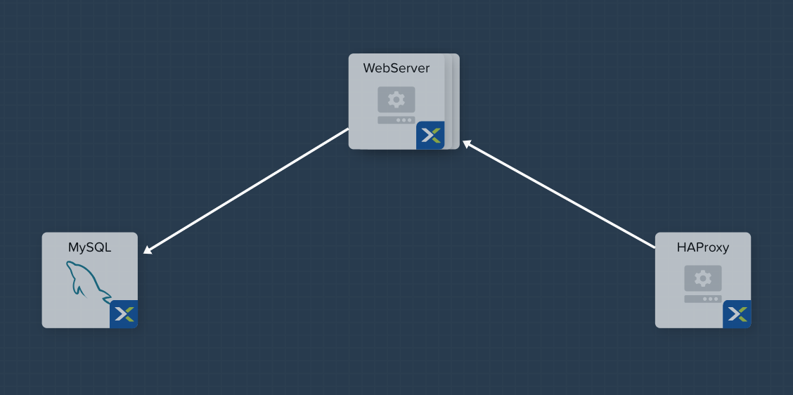
From Prism Central > Apps, select Blueprints from the sidebar and select your Blueprint from the previous exercise.
In Application Overview > Services, click .
Note Service2 appears in the Workspace and the Configuration Pane reflects the configuration of the selected Service. You can rearrange the Service icons on the Workspace by clicking and dragging them.
With the WebServer service icon selected in the workspace window, scroll to the top of the Configuration Panel, click VM.
Service Name - WebServer
Name - WebServer_AHV
Cloud - Nutanix
OS - Linux
VM Name - WebServer-@@{calm_array_index}@@-@@{calm_time}@@
Image - CentOS_7_Cloud
Device Type - Disk
Device Bus - SCSI
Select Bootable
vCPUs - 2
Cores per vCPU - 1
Memory (GiB) - 4
Guest Customization - Depending on your track:
Cloud Track - Select Guest Customization
Leave Cloud-init selected and paste in the following script
#cloud-config
users:
- name: centos
ssh-authorized-keys:
- @@{INSTANCE_PUBLIC_KEY}@@
sudo: ['ALL=(ALL) NOPASSWD:ALL']
Local Track - Leave Guest Customization Unselected
Select under Network Adapters (NICs)
NIC - Primary
Credential - CENTOS
Click Save and ensure no errors or warnings pop-up. If they do, resolve the issue, and Save again.
With the WebServer service icon selected in the workspace window, scroll to the top of the Configuration Panel, click Package. Name the Package as WebServer_PACKAGE, and then click the Configure install button.
On the Blueprint Canvas section, a Package Install field will pop up next to the WebServer Service tile. Click on the + Task button, and fill out the following fields on the Configuration Panel on the right:
Copy and paste the following script into the Script field:
#!/bin/bash
set -ex
sudo yum update -y
sudo yum -y install epel-release
sudo setenforce 0
sudo sed -i 's/enforcing/disabled/g' /etc/selinux/config /etc/selinux/config
sudo systemctl stop firewalld || true
sudo systemctl disable firewalld || true
sudo rpm -Uvh https://mirror.webtatic.com/yum/el7/webtatic-release.rpm
sudo yum update -y
sudo yum install -y nginx php56w-fpm php56w-cli php56w-mcrypt php56w-mysql php56w-mbstring php56w-dom git unzip
sudo mkdir -p /var/www/laravel
echo "server {
listen 80 default_server;
listen [::]:80 default_server ipv6only=on;
root /var/www/laravel/public/;
index index.php index.html index.htm;
location / {
try_files \$uri \$uri/ /index.php?\$query_string;
}
# pass the PHP scripts to FastCGI server listening on /var/run/php5-fpm.sock
location ~ \.php$ {
try_files \$uri /index.php =404;
fastcgi_split_path_info ^(.+\.php)(/.+)\$;
fastcgi_pass 127.0.0.1:9000;
fastcgi_index index.php;
fastcgi_param SCRIPT_FILENAME \$document_root\$fastcgi_script_name;
include fastcgi_params;
}
}" | sudo tee /etc/nginx/conf.d/laravel.conf
sudo sed -i 's/80 default_server/80/g' /etc/nginx/nginx.conf
if `grep "cgi.fix_pathinfo" /etc/php.ini` ; then
sudo sed -i 's/cgi.fix_pathinfo=1/cgi.fix_pathinfo=0/' /etc/php.ini
else
sudo sed -i 's/;cgi.fix_pathinfo=1/cgi.fix_pathinfo=0/' /etc/php.ini
fi
sudo systemctl enable php-fpm
sudo systemctl enable nginx
sudo systemctl restart php-fpm
sudo systemctl restart nginx
if [ ! -e /usr/local/bin/composer ]
then
curl -sS https://getcomposer.org/installer | php
sudo mv composer.phar /usr/local/bin/composer
sudo chmod +x /usr/local/bin/composer
fi
sudo git clone https://github.com/ideadevice/quickstart-basic.git /var/www/laravel
sudo sed -i 's/DB_HOST=.*/DB_HOST=@@{MySQL.address}@@/' /var/www/laravel/.env
sudo su - -c "cd /var/www/laravel; composer install"
if [ "@@{calm_array_index}@@" == "0" ]; then
sudo su - -c "cd /var/www/laravel; php artisan migrate"
fi
sudo chown -R nginx:nginx /var/www/laravel
sudo chmod -R 777 /var/www/laravel/
sudo systemctl restart nginx
Select the WebServer service icon in the workspace window again and scroll to the top of the Configuration Panel, click Package.
Fill out the following fields:
Copy and paste the following script into the Script field:
#!/bin/bash
set -ex
sudo rm -rf /var/www/laravel
sudo yum erase -y nginx
Click Save and ensure no errors or warnings pop-up. If they do, resolve the issue, and Save again.
As our application will require the database to be running before the web server starts, our Blueprint requires a dependency to enforce this ordering. There are a couple of ways to do this, one of which we’ve already done without likely realizing it. If you didn’t save after the last step, be sure to do that first.
In the Application Overview > Application Profile section, expand the Default Application Profile (if you renamed the Application Profile at a previous step, then just select that re-named application profile). Next, click on the Create Profile Action and view the Workspace:
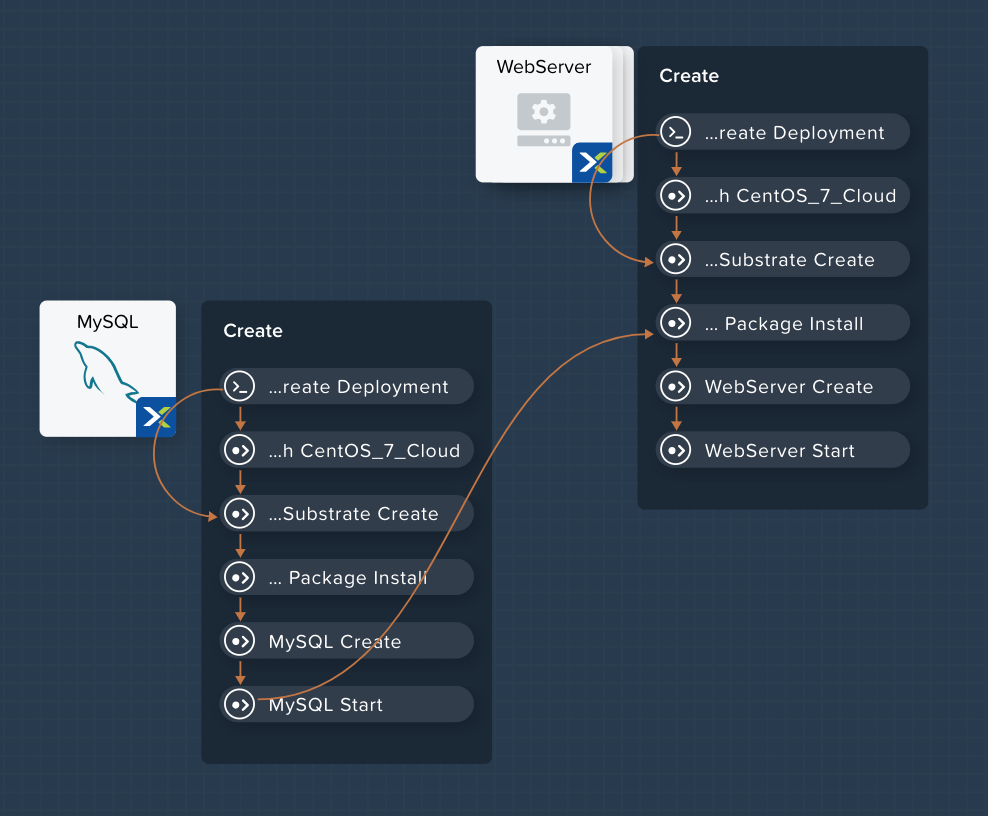
Take note of the Orange Orchestration Edge going from the MySQL Start task to the WebServer Package Install task. This edge was automatically created by Calm due to the @@{MySQL.address}@@ macro reference in the WebServer Package Install task. Since the system needs to know the IP Address of the MySQL service prior to being able to proceed with the WebServer Install task, it automatically creates the orchestration edge. This requires the MySQL service to be started prior to moving on to the WebServer Install task.
Next, back in the Application Overview > Application Profile section, select the Stop Profile Action. View the Workplace section: notice how there are no orange orchestration edges? This could cause issues if the MySQL service shutdown slightly before the WebServer accepted a request. Click on each Profile Action to take note of the current presence (or lack thereof) of the orange orchestration edges.
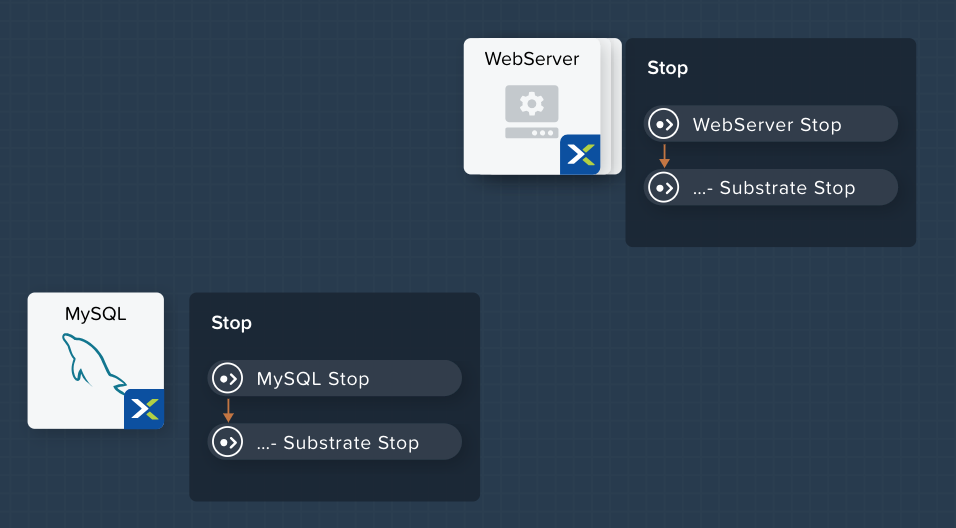
To resolve this, we’ll manually create a dependency. In the Workspace, select the WebServer Service and click the Create Dependency icon that appears above the Service icon, and then click on the MySQL service. This represents that the WebServer service “depends” upon the MySQL service, meaning the MySQL service will start before, and stop after, the WebServer service.
Click Save. You should see the system draw an Orange Orchestration Edge like so:
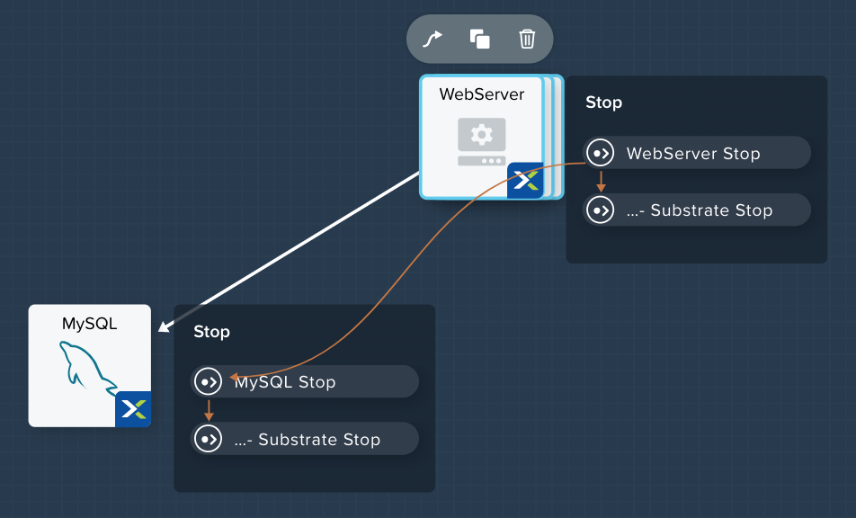
Drawing the white dependency arrows will cause Calm to create orange orchestration edges for all System Defined Profile Actions (Create, Start, Restart, Stop, Delete, and Soft Delete). Click on each Profile Action to see the difference compared to before the white dependency arrow was drawn.
Calm makes it simple to add multiple copies of a given Service, which is helpful for scale out workloads such as web servers.
In the Workspace, select the WebServer Service.
In the Configuration Pane, select the Service tab.
Under Deployment Config, change the Min number of replicas from 1 to 2, and the Max Number of replicas from 1 to 4.
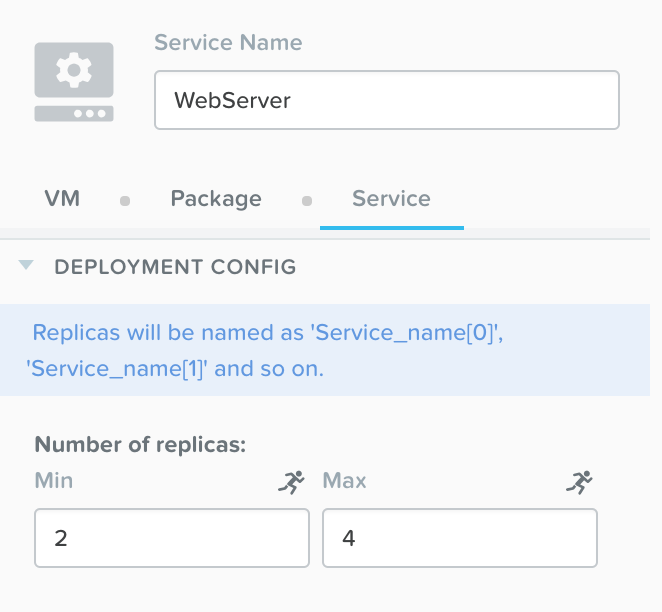
To take advantage of a scale out web tier our application needs to be able to load balance connections across multiple web server VMs. HAProxy is a free, open source TCP/HTTP load balancer used to distribute workloads across multiple servers. It can be used in small, simple deployments and large web-scale environments such as GitHub, Instagram, and Twitter.
In Application Overview > Services, click .
Select Service3 and fill out the following fields in the Configuration Pane:
Service Name - HAProxy
Name - HAPROXYAHV
Cloud - Nutanix
OS - Linux
VM Name - HAProxy-@@{calm_array_index}@@-@@{calm_time}@@
Image - CentOS_7_Cloud
Device Type - Disk
Device Bus - SCSI
Select Bootable
vCPUs - 2
Cores per vCPU - 1
Memory (GiB) - 4
Guest Customization - Depending on your track:
Cloud Track - Select Guest Customization
Leave Cloud-init selected and paste in the following script
#cloud-config
users:
- name: centos
ssh-authorized-keys:
- @@{INSTANCE_PUBLIC_KEY}@@
sudo: ['ALL=(ALL) NOPASSWD:ALL']
Local Track - Leave Guest Customization Unselected
Select under Network Adapters (NICs)
NIC - Primary
Credential - CENTOS
Scroll to the top of the Configuration Panel, click Package.
Fill out the following fields:
Copy and paste the following script into the Script field:
#!/bin/bash
set -ex
sudo yum update -y
sudo yum install -y haproxy
sudo setenforce 0
sudo sed -i 's/enforcing/disabled/g' /etc/selinux/config /etc/selinux/config
sudo systemctl stop firewalld || true
sudo systemctl disable firewalld || true
echo "global
log 127.0.0.1 local0
log 127.0.0.1 local1 notice
maxconn 4096
quiet
user haproxy
group haproxy
defaults
log global
mode http
retries 3
timeout client 50s
timeout connect 5s
timeout server 50s
option dontlognull
option httplog
option redispatch
balance roundrobin
# Set up application listeners here.
listen admin
bind 127.0.0.1:22002
mode http
stats uri /
frontend http
maxconn 2000
bind 0.0.0.0:80
default_backend servers-http
backend servers-http" | sudo tee /etc/haproxy/haproxy.cfg
hosts=$(echo "@@{WebServer.address}@@" | tr "," "\n")
port=80
for host in $hosts
do echo " server host-${host} ${host}:${port} weight 1 maxconn 100 check" | sudo tee -a /etc/haproxy/haproxy.cfg
done
sudo systemctl daemon-reload
sudo systemctl enable haproxy
sudo systemctl restart haproxy
Select the HAProxy service icon in the workspace window again and scroll to the top of the Configuration Panel, click Package.
Fill out the following fields:
Copy and paste the following script into the Script field:
#!/bin/bash
set -ex
sudo
yum -y erase haproxy
Click Save.
In the Workspace, select the HAProxy Service and click the Create Dependency icon that appears above the Service icon. Select the WebServer Service.
Click Save and ensure no errors or warnings pop-up. If they do, resolve the issue, and Save again.
Imagine you’re the administrator of the Task Manager Application that we’ve been building, and you’re currently unsure of the amount of demand for this application by your end users. Or imagine you expect the demand to ebb and flow due to the time of the year. How can we easily scale to meet this changing demand?
If you recall in a previous step, we set the minimum number of WebServer replicas to 2, and our maximum to 4. In current versions of Calm, the minimum number is always the starting point. In the event our default 2 replicas of our WebServer web server is not enough to handle the load of your end users, we can perform a Scale Out Action.
In the Application Overview > Application Profile section, expand the Default Application Profile. Then, select next to the Actions section. On the Configuration Panel to the right, rename the new Action to be Scale Out.
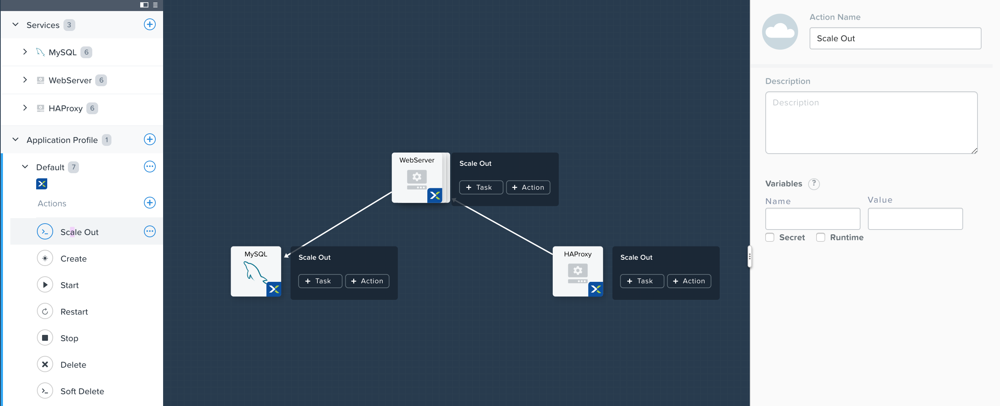
Next to the WebServer service tile, click the + Task button, then fill out the following fields:
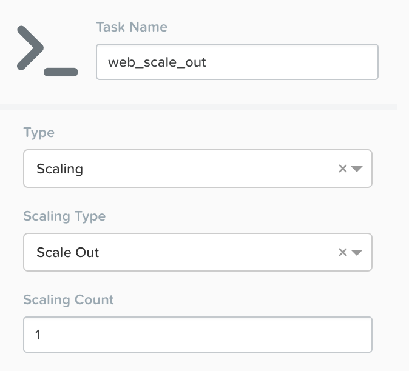
Click Save and ensure no errors or warnings pop-up. If they do, resolve the issue, and Save again.
When a user later runs the Scale Out task, a new WebServer VM will get created, and the Package Install tasks for that service will be exectured. However, we do need to modify the HAProxy configuration in order to start taking advantage of this new web server.
Next to the HAProxy service tile, click the + Task button, then fill out the following fields:
Copy and paste the following script into the Script field:
#!/bin/bash
set -ex
host=$(echo "@@{WebServer.address}@@" | awk -F "," '{print $NF}')
port=80
echo " server host-${host} ${host}:${port} weight 1 maxconn 100 check" | sudo tee -a /etc/haproxy/haproxy.cfg
sudo systemctl daemon-reload
sudo systemctl restart haproxy
That script will grab the last address in the WebServer address array, and add it to the haproxy.cfg file. However, we want to be sure that this doesn’t happen until after the new WebServer is fully up, otherwise the HAProxy server may send requests to a non-functioning WebServer.
To solve this issue, on the Workspace, click on the web_scale_out task, then the Create Edge arrow icon, and finally click on the add_webserver task to draw the edge. Afterwards your Workspace should look like this:
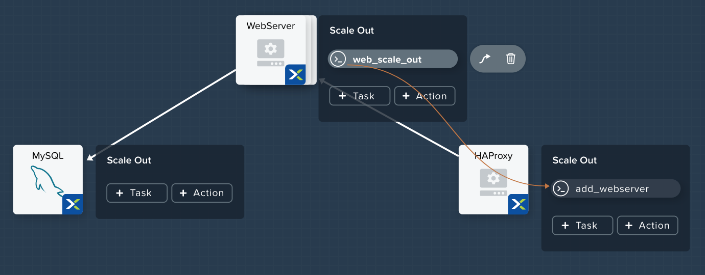
Again imagine you’re the administrator of this Task Manager Application we’re building. It’s the end of your busy season, and you’d like to scale the Web Server back in to save on resource utilization. To accomplish this, navigate to the Application Overview > Application Profile section, expand the Default Application Profile. Then, select next to the Actions section. On the Configuration Panel to the right, rename the new Action to be Scale In.
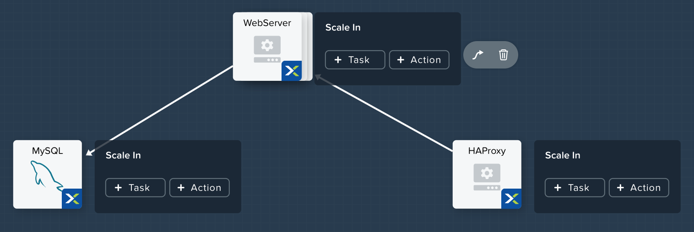
Next to the WebServer service tile, click the + Task button, then fill out the following fields:
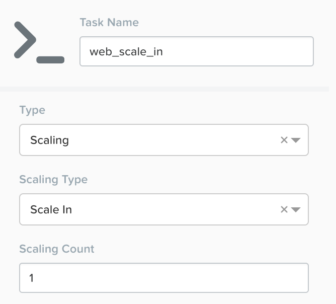
Click Save and ensure no errors or warnings pop-up. If they do, resolve the issue, and Save again.
When a user later runs the Scale In task, the last WebServer replica will have its Package Uninstall task run, the VM will be shut down, and then deleted, which will reclaim resources. However, we do need to modify the HAProxy configuration to ensure that we’re no longer sending traffic to the to-be-deleted Web Server.
Next to the HAProxy service tile, click the + Task button, then fill out the following fields:
Copy and paste the following script into the Script field:
#!/bin/bash
set -ex
host=$(echo "@@{WebServer.address}@@" | awk -F "," '{print $NF}')
sudo sed -i '/$host/d' /etc/haproxy/haproxy.cfg
sudo systemctl daemon-reload
sudo systemctl restart haproxy
That script will grab the last address in the WebServer address array, and remove it from the haproxy.cfg file. Similar to the last step, we want to be sure that this happens before the new WebServer is destroyed, otherwise the HAProxy server may send requests to a non-functioning WebServer.
To solve this issue, on the Workspace, click on the del_webserver task, then the Create Edge arrow icon, and finally click on the web_scale_in task to draw the edge. Afterwards your Workspace should look like this:
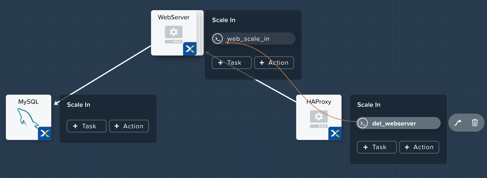
Click Save and ensure no errors or warnings pop-up. If they do, resolve the issue, and Save again.
Within the blueprint editor, click Launch. Specify a unique Application Name (e.g. Calm3TWA*<INITIALS>*-2) and click Create. Monitor the application as it deploys.
Once the application changes into a RUNNING state, navigate to the Services tab and select the HAProxy service. On the panel that pops open on the right, highlight and copy the IP Address field. In a new browser tab or window, navigate to http://<HAProxy-IP>, and test out your Task Manager Web Application.
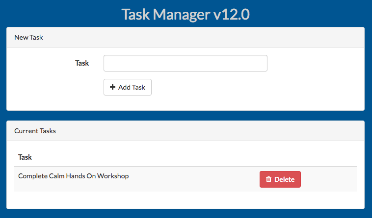
Now, back within Calm, navigate to the Manage tab, and click the play button next to the Scale Out task, and click Run to Scale out the Web Server. Monitor the Scale Out action on the Audit tab.